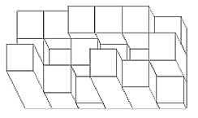
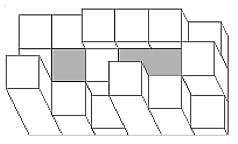

Cube world is a magical place where the land is made up of cubes stacked on top of each other to form towers. You can think of this world as an N by M field, where each of the N*M regions is a rectangular prism of some height. The following picture is one possible cube world (it is also the picture of the first sample input):
One day, it starts to rain heavily on cube world. Being the world's leading computer scientist, you want to determine the maximum volume of water that can amass in the cavities of cube world:
The input file DATA5.txt will contain 5 test cases. The first line consists of two numbers N and M (1 <= N, M <= 20) representing the number of rows and columns of cube world. The next N lines contains M number each, representing the height of each region of cube world. The world is not higher than 50 units (and no negative heights).
The output file OUT5.txt should contain 5 lines, where each line represents the maximum volume of water that can be stored in each cube world.
Cite: the question idea, and pictures, are from Stage 3 of the 6th Polish Olympiad in Informatics.
3 6 3 3 4 4 4 2 3 1 3 2 1 4 7 3 1 6 4 1
5